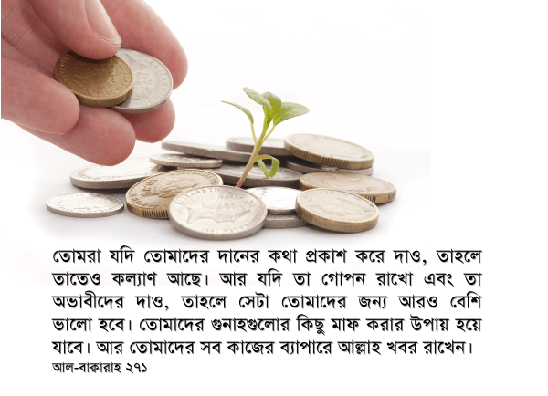

তোমরা যদি তোমাদের দানের কথা প্রকাশ করে দাও, তাহলে তাতেও কল্যাণ আছে। আর যদি তা গোপন রাখো এবং তা অভাবীদের দাও, তাহলে সেটা তোমাদের জন্য আরও বেশি ভালো হবে। তোমাদের গুনাহগুলোর কিছু মাফ করার উপায় হয়ে যাবে। আর তোমাদের সব কাজের ব্যাপারে আল্লাহ খবর রাখেন। [আল-বাক্বারাহ ২৭১]
সাদাকা অর্থাৎ দান করে সেটা মানুষের কাছে প্রকাশ করে দেওয়া দোষের কিছু নয়, যদি সেটাতে অন্যরা দান করতে উদ্বুদ্ধ হয়। শুধু সাবধান থাকতে হবে যেন, দানের উদ্দেশ্য শুধুই লোক দেখানো হয়ে না যায়। এর আগের আয়াতগুলোতেই আমরা দেখেছি যে, যারা শুধুই লোক দেখানো দান করে, আল্লাহকে تعالى খুশি করা একমাত্র উদ্দেশ্য থাকে না, অথবা যাদেরকে দান করা হয়েছে, তাদেরকে বার বার খোটা দেয়, তাদের পরিণাম ভয়ংকর। তারা এর কোনো প্রতিদান আল্লাহর কাছে তো পাবেইনা উপরন্তু এটা তাদের জাহান্নামে যাবার কারণও হতে পারে। কিন্তু এই আয়াতে বলা হচ্ছে যে, যদি দান করে সেটা মানুষ প্রকাশ করে দেয়, এবং তা থেকে অন্যরা উৎসাহিত হয়, যা থেকে অভাবীদেরই শেষ পর্যন্ত উপকার হয়, তাহলে এই প্রকাশ করার মধ্যেও কল্যাণ রয়েছে।[১২][১৪][১৯][২০]

যেমন, আমরা হয়ত কোনো ত্রাণসংস্থায় দান করে এসে অন্যদেরকে বলতে পারি যে, আমরা সেখানে দান করেছি। এতে করে মানুষ সেই ত্রাণসংস্থাকে বিশ্বস্ত মনে করবে। আমাদের দান করা দেখে তারা নিজেরাও দান করতে আগ্রহী হবে। এর ফলে আরও কল্যাণ হবে। অথবা আমরা কোনো এতিমখানায় দান করে এসে সেখানকার পরিস্থিতি সম্পর্কে বলার পাশাপাশি আমরা যে তাদেরকে সহযোগিতা করছি, সেটা জানাতে পারি। এতে করে মানুষ সেই এতিমখানায় দান করার ব্যাপারে আস্থা পাবে। কারণ, দান করার জন্য মানুষকে উদ্বুদ্ধ করলে মানুষ যতটা না আগ্রহ পায়, তার থেকে বেশি আগ্রহ পায় যখন মানুষ দেখে অনেকেই সেখানে দান করছে। তখন গ্রুপ ডাইনামিকস কাজ করে। একারণেই মসজিদে দান বাক্সে একজন যখন দান করে, তখন পাশের জনের কিছুটা হলেও খারাপ লাগে। এই খারাপ লাগা থেকেই সে অনেক সময় দান করে। কিন্তু বাক্স যখন খালি ঘুরতে থাকে, তখন মানুষ বাক্সটাকে খালি ঠেলে দিতে খুব একটা খারাপ বোধ করে না। অন্য কেউ যখন দিচ্ছে না, আমি না দিলেও চলে —এরকম চিন্তা চলে আসে। কিন্তু যখনি একজন একটা চকচকে পাঁচশ টাকার নোট বের করে সুন্দর করে ভাঁজ করে বাক্সে ঢোকায়, তখন কোনো কারণে তার পাশের জনের পাঁচ টাকার ছেড়া নোটটা দেওয়ার পরিকল্পনা মুহূর্তের মধ্যে পরিবর্তন হয়ে একটা বড় নোট বের হয়ে যায়।
এভাবে অভাবীদের ছোট না করেও না করেও প্রকাশ্যে বিভিন্নভাবে আমরা দান করতে পারি, যার ফলে সমাজে অনেক কল্যাণ আসতে পারে। তবে এধরনের উপকারের কোনো আশা না থাকলে, ইসলামে গোপন দানকেই বেশি করে উৎসাহিত করা হয়, কারণ গোপনে দান করলে আল্লাহর تعالى সন্তুষ্টি অর্জন ছাড়া আর কোনো উদ্দেশ্য সাধারণত থাকে না। এছাড়া গোপনে দান করলে, যারা দান গ্রহণ করছে, তাদের ছোট না হওয়ার সম্ভাবনাও কম।
সেটা তোমাদের কিছু গুনাহ মাফ করার উপায় হয়ে যাবে
গুনাহ মাফ করার যে পদ্ধতি কুর‘আনে দেওয়া আছে, তা হলো দান করা। দান আমাদের গুনাহের কাফফরা হিসেবে কাজ করে। আমরা যত দান করবো, আমাদের তত বেশি গুনাহ আল্লাহ تعالى মাফ করে দেবেন। কুর‘আনে বহুবার দান করতে উৎসাহিত করা হয়েছে। সুরা আল-বাক্বারাহ’তেই বিশটির বেশি আয়াতে দান করা নিয়ে আয়াত রয়েছে। আল্লাহ تعالى একবার কুর‘আনে কোনো কিছু নিয়ে বললেই সেটা আমাদের জন্য গুরুত্বপূর্ণ হয়ে যায়। আর সে জায়াগায় তিনি تعالى আমাদেরকে বিশ বারের বেশি দান করার কথা বলেছেন। এথেকেই বোঝা যায় দান করাটা তাঁর تعالى কাছে কত গুরুত্বপূর্ণ ব্যাপার।
ফরজ দানগুলো, যেমন যাকাত আদায় প্রকাশ্যে করা বেশি ভালো বলে অধিকাংশ মত পাওয়া যায়। যাকাত প্রকাশ্যে আদায় করতেই তাগাদা দেওয়া হয়েছে। এতে করে সমাজে যাকাত দেওয়ার প্রচলন বাড়ে। মানুষ যত বেশি দেখে যে অন্যরা যাকাত দিচ্ছে, তত বেশি নিজেরা যাকাত দিতে সচেষ্ট হয়।[১২][১৪][১৯][২০]
তবে সেখানেও লোক দেখানো যাকাত দেওয়া থেকে সাবধান থাকতে হবে। নিয়তের মধ্যে যেন আল্লাহর تعالى সন্তুষ্টি অর্জন ছাড়া আর অন্য কোনো উদ্দেশ্য ঢুকে না পড়ে, সে ব্যাপারে সবসময় সাবধান থাকতে হবে। আর যাদেরকে যাকাত দেওয়া হচ্ছে, তাদেরকে অপমানিত করা থেকে সাবধান থাকতে হবে। বিরাট আয়োজন করে গরিব লোকদের ডেকে হুমড়ি খাওয়া ভিড়, ধাক্কাধাক্কি সৃষ্টি করে, কিছু সস্তা কাপড় আর চাল বিলি করে যাকাত দেওয়ার মত নোংরা দান আর কিছু হতে পারে না।
ওরা সঠিক পথে চলল কি না, তা তোমার দায়িত্ব নয়। বরং আল্লাহ যাকে চান, তাকে সঠিক পথে নিয়ে আসেন। তোমরা ভালো যা কিছুই খরচ করো না কেন, সেটা তোমাদের স্বার্থেই হবে, কারণ তোমরা শুধুমাত্র আল্লাহকে পাওয়ার উদ্দেশ্যেই তা খরচ করো। আর ভালো যা কিছুই তোমরা খরচ করবে, সেটার পুরো প্রতিদান তোমাদেরকে দেওয়া হবে। তোমাদের উপর একটুও অন্যায় করা হবে না। [আল-বাক্বারাহ ২৭২]
অনেক সময় আমরা দান করার সময় ভাবি, “ওকে ব্যবসার জন্য টাকা দিয়ে কী লাভ হবে? যদি ও ব্যবসা না করে? যদি টাকা মেরে দেয়?” — আমাদের দান নিয়ে মানুষ শেষ পর্যন্ত যদি ভালো কাজ না করে, তাহলে তার দায়িত্ব আমাদের উপর পড়ে না। আমরা যতটুকু সম্ভব চিন্তাভাবনা করে চেষ্টা করবো সঠিক মানুষকে সাহায্য করার। কিন্তু মানুষ সঠিক পথে শেষ পর্যন্ত চলল কিনা সেটার দায় আমাদের উপর পড়ে না। আমাদের কাজ হচ্ছে, মানুষকে সঠিক পথে চলতে সাহায্য করা। শেষ পর্যন্ত যদি কেউ যদি ভুল পথ বেছে নেয়, আমাদের সাহায্যের অপব্যবহার করে, তাহলে সেটা তার দোষ। আমি তাকে সাহায্য করে আমার দায়িত্ব পালন করছি, যেন আমাকে দান না করার জন্য শাস্তি পেতে না হয়।
একইসাথে নিরীহ অমুসলিমদের সাদাকা দেওয়া বা দান করা এই আয়াতে বৈধ করা হয়েছে। শুধু বৈধই না, নিরীহ অমুসলিমদের দান করলে যে আমরা প্রতিদানে আখিরাতে পুরস্কার পাবো, সেই নিশ্চয়তাও দেওয়া হয়েছে। তবে আমাদের দান পেয়ে অমুসলিমরা শেষ পর্যন্ত ইসলামের প্রতি আগ্রহী হয়ে মুসলিম হয়ে যায় কিনা, সেটা আমাদের দায়িত্ব নয়। আল্লাহ تعالى কাকে ইসলাম গ্রহণ করার সম্মান দেবেন, সেটা সম্পূর্ণ তাঁর تعالى সিদ্ধান্ত। আমাদের কাজ শুধুই আল্লাহকে تعالى খুশি করার উদ্দেশ্য নিয়ে দান করে যাওয়া।[৪][১৪]
একারণেই বলা হয়েছে যে, শুধুমাত্র আল্লাহর تعالى খুশির জন্য আমি ভালো যা কিছুই খরচ করবো, সেটা আসলে আমি নিজের জন্যই খরচ করছি। আমাদের দানের পেছনে নিঃস্বার্থ কাজ করে না, বরং শেষ পর্যন্ত নিজের স্বার্থই জড়িত। আমি দান করি, কারণ আমি দানের দায়িত্ব পালন করে শাস্তি থেকে পালাতে চাই, আর আমার দানের বিনিময়ে দুনিয়া এবং আখিরাতে কল্যাণ চাই। নিঃস্বার্থ দান বলে কিছু নেই। আমাদের প্রতিটা দানের পেছনে নিজের সুদূরপ্রসারী লাভের নিয়ত রয়েছে।
এই আয়াতে লক্ষ্য করার ব্যাপার হলো যে, আল্লাহ تعالى আমাদেরকে বলেননি আমাদের সম্পদ খরচ করতে, বরং তিনি বলেছেন ‘তোমরা ভালো যা কিছুই খরচ করো’। যদি মাল বা সম্পদের কথা বলতেন, তাহলে আমরা শুধুই সম্পদ খরচ করতাম। কিন্তু তিনি تعالى ভালো সবকিছুই খরচ করতে বলেছেন — আমাদের সম্পদ, বুদ্ধি, শক্তি, প্রভাব, কর্তৃত্ব সবকিছুকেই ভালো কাজে খরচ করতে বলেছেন। আমাদের অনেকের হয়ত টাকা নেই, কিন্তু গায়ের জোর আছে। আমরা সেটাকেও ভালো কাজে লাগাতে পারি, মসজিদ তৈরিতে ব্যবহার করতে পারি, এলাকার ভাঙ্গা স্থাপনাগুলো মেরামত করে দিতে পারি। আমাদের অনেকের হয়ত সম্পদ বা শক্তি নেই, কিন্তু মেধা আছে। আমরা সেই মেধাকে আল্লাহর تعالى পথে কাজে লাগাতে পারি। মেধা ব্যবহার করে ইসলাম নিয়ে লিখতে পারি, আরবি বইগুলো সহজ ভাষায় অনুবাদ করতে পারি, গরিবদের পড়ালেখা শেখাতে পারি, ইসলামের দাওয়াত দিতে পারি ইত্যাদি। এভাবে আমাদের ভালো যা কিছুই আছে, সম্পদ, বুদ্ধি, ক্ষমতা, প্রতিভা, প্রভাব, লেখনী —এই সবকিছুই আমরা আল্লাহর تعالى পথে দান করতে পারি।
একইসাথে এই আয়াতে আবারো আমরা জানতে পারি যে, আমাদের দানের উদ্দেশ্য হতে হবে শুধুই আল্লাহর تعالى সন্তুষ্টি পাওয়া। অন্য কোনো আকাঙ্ক্ষা মনের ভেতরে কাজ করলে হবে না। আমি নিজেকে বোঝাচ্ছি যে, আমি দান করলাম শুধুই আল্লাহকে تعالى খুশি করার জন্য, কিন্তু আমার দান পেয়ে সে একবারও আমাকে ফোন করে খোঁজ নিলো না দেখে আমি রাগ করে বসে আছি, তার মানে দাঁড়ায় আমার দানের উদ্দেশ্য শুধুই আল্লাহর تعالى সন্তুষ্টি ছিল না। ভেতরে ভেতরে আমি যাকে দান করেছি, তার কাছ থেকে প্রতিদানে কিছু আশা করছিলাম।
দান সম্পর্কে আয়াতগুলো আল্লাহ تعالى সাধারণত শেষ করেন এই বলে যে, “সেটার পুরো প্রতিদান তোমাদেরকে দেওয়া হবে। তোমাদের উপর একটুও অন্যায় করা হবে না।” —এটা আল্লাহর تعالى পক্ষ থেকে কত বড় দয়া যে, তিনি تعالى আমাদেরকে নানাভাবে আশ্বস্ত করেন, যেন আমাদের মধ্যে দান করতে কোনো দ্বিধা কাজ না করে। মুসলিমদের এরকম কথা শুনে লজ্জা পাওয়া উচিত। দান করার জন্য তিনি تعالى আমাদেরকে এতভাবে বুঝিয়ে বলেন, এতভাবে আশ্বস্ত করেন, কিন্তু তারপরেও আমরা অনেকেই দান করি না।
[১] বাইয়িনাহ এর কু’রআনের তাফসীর। [২] ম্যাসেজ অফ দা কু’রআন — মুহাম্মাদ আসাদ। [৩] তাফহিমুল কু’রআন — মাওলানা মাওদুদি। [৪] মা’রিফুল কু’রআন — মুফতি শাফি উসমানী। [৫] মুহাম্মাদ মোহার আলি — A Word for Word Meaning of The Quran [৬] সৈয়দ কুতব — In the Shade of the Quran [৭] তাদাব্বুরে কু’রআন — আমিন আহসান ইসলাহি। [৮] তাফসিরে তাওযীহুল কু’রআন — মুফতি তাক্বি উসমানী। [৯] বায়ান আল কু’রআন — ড: ইসরার আহমেদ। [১০] তাফসীর উল কু’রআন — মাওলানা আব্দুল মাজিদ দারিয়াবাদি [১১] কু’রআন তাফসীর — আব্দুর রাহিম আস-সারানবি [১২] আত-তাবারি-এর তাফসীরের অনুবাদ। [১৩] তাফসির ইবন আব্বাস। [১৪] তাফসির আল কুরতুবি। [১৫] তাফসির আল জালালাইন। [১৬] লুঘাতুল কুরআন — গুলাম আহমেদ পারভেজ। [১৭] তাফসীর আহসানুল বায়ান — ইসলামিক সেন্টার, আল-মাজমাআহ, সউদি আরব। [১৮] কু’রআনুল কারীম – বাংলা অনুবাদ ও সংক্ষিপ্ত তাফসীর — বাদশাহ ফাহাদ কু’রআন মুদ্রণ কমপ্লেক্স। [১৯] তাফসির আল-কাবির। [২০] তাফসির আল-কাশ্শাফ